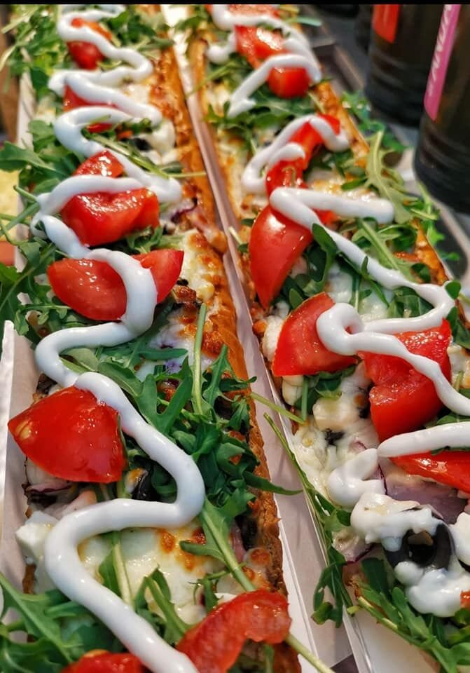
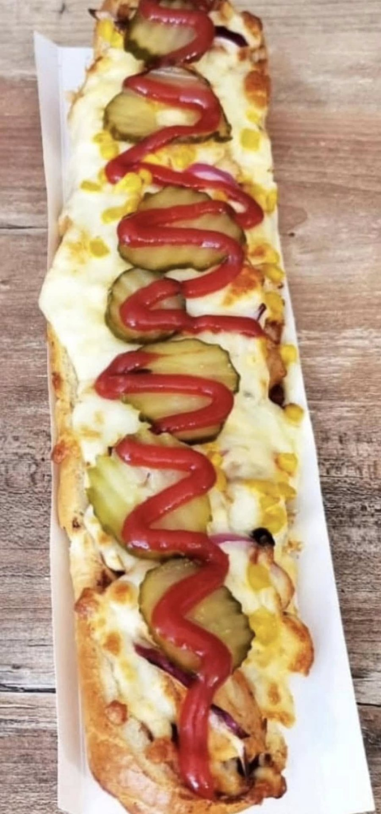

Wiejska
Boczek, kiełbasa, pieczarki, ser
24 zł / 27 złChrupiąca bagietka, dużo sera, świeże dodatki i sos, który sam wybierasz. Mała ma 30 cm, duża aż pół metra.
Kliknij i porównaj. Każdą zapiekankę robimy w dwóch rozmiarach.
Boczek, kiełbasa, pieczarki, ser
24 zł / 27 zł
Kurczak, pieczarki, ser
24 zł / 27 zł
Szynka, salami, boczek, pieczarki, ser
24 zł / 27 zł
Amerykański, z parówką albo kabanosem
19 zł / 20 złDziesięć zapiekanek, od klasycznej z pieczarkami i serem po Tropikanę z kurczakiem i ananasem.
Świeże warzywa i sosy kładziemy tak, jak lubisz. Więcej, mniej, bez cebuli. Ty decydujesz.
Gorąca, chrupiąca, z ciągnącym się serem. Zjesz w ogródku albo zabierzesz na wynos.
Po zapiekance zawsze jest miejsce na deser.

„Odwiedziłam ponownie Pieczarkę i powiem wam, że dalej jest topka. Moja ulubiona miejscówka w okolicach Warszawy. 20/10”@aleksandrags, Instagram
„Duża zapiekanka to konkret. Ser się ciągnie, sosy świetne, a obsługa bardzo miła.”Przykładowa opinia
„Wpadamy z dziećmi na zapiekankę, a potem na lody w ogródku. Zawsze świeże.”Przykładowa opinia
Zamów telefonicznie i odbierz bez czekania. Zagańczyka 10, Kobyłka.